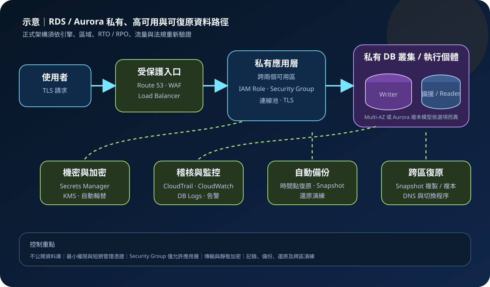

AWS 基礎介紹 06 · 2026-08-27
Amazon RDS 與 Aurora：受管關聯式資料庫
作者：Dr. William｜雲端與資訊安全實務工作者
Amazon Relational Database Service（Amazon RDS）是受管關聯式資料庫服務，支援多種資料庫引擎並代管佈建、基礎設施維護、備份與部分修補工作。Amazon Aurora 是為雲端設計、與 MySQL 或 PostgreSQL 相容的關聯式資料庫引擎，運算與分散式儲存採不同架構。受管不代表免管理：資料模型、查詢、帳號授權、網路暴露、加密選項、容量、備份保留與復原驗證仍由客戶治理。
服務定位：RDS 與 Aurora 降低資料庫基礎設施的日常管理負擔，適合需要 SQL、交易一致性、關聯與既有引擎相容性的工作負載。它們不是無限自動擴展的通用資料層，也不會代替應用程式安全、資料分類、IAM 治理、機密輪替、查詢最佳化或災難復原決策。
核心概念：引擎、拓撲與故障切換
- RDS 引擎：RDS 提供 MySQL、PostgreSQL、MariaDB、Oracle Database、SQL Server、Db2 等引擎選項；版本、功能、授權模式與區域支援不同，遷移前須檢查相容性。
- Aurora 架構：Aurora 提供 MySQL 相容與 PostgreSQL 相容版本。叢集通常包含一個 Writer 端點，可加入 Aurora Replica 處理讀取與故障切換；儲存會在同一區域內跨多個可用區保存資料副本。
- DB Instance 與儲存：運算規格影響 CPU、記憶體與網路；儲存類型、容量、IOPS 與吞吐量影響延遲和費用。Aurora 的計費與擴展模型不同於一般 RDS 引擎，不能只比較執行個體單價。
- Multi-AZ：RDS 的 Multi-AZ 選項用於提高可用性，具體拓撲可能是待命執行個體或 Multi-AZ DB Cluster。待命節點不是一般讀取擴展節點；故障切換仍可能造成短暫中斷，應用必須重試及重新連線。
- Read Replica：讀取複本用於讀取擴展或部分復原設計，通常採非同步複寫，可能有延遲。它不能取代備份，也不保證讀到最新交易。
- 端點與 DNS：應用程式應使用服務提供的端點，不綁定底層 IP。Aurora Writer、Reader 與自訂端點用途不同；DNS 快取與連線池設定會影響故障切換恢復時間。
- 備份與快照：自動備份支援指定保留期間內的時間點復原；手動 Snapshot 依保留需求保存。還原通常會建立新的資料庫資源，而不是原地倒帶。
適合與不適合的使用情境
適合
- 訂單、帳務、會員、預約及企業系統，需要 SQL、約束、交易與關聯查詢。
- 希望保留 MySQL、PostgreSQL 或其他支援引擎相容性，同時降低硬體、備份及基礎維護負擔。
- 需要 Multi-AZ、讀取複本、時間點復原、監控及受控維護窗口的線上服務。
- 能清楚評估查詢模式、資料量、連線數、RTO/RPO 與授權條件的長期工作負載。
不適合
- 主要需求是毫秒級全球鍵值存取、極大量無固定結構事件或物件儲存；DynamoDB、S3 或分析服務可能更合適。
- 需要作業系統 root 權限、自訂核心、任意檔案系統控制或不受支援的資料庫外掛。
- 假設選用 Multi-AZ 就不必做備份、資料誤刪防護、跨區復原與應用層重試。
- 無法接受引擎版本、維護、故障切換或服務配額邊界，且需要完全自行掌控升級時序。
示意故事案例：線上訂單資料庫
以下為示意案例，非真實客戶案例。某零售平台將前端流量送入跨可用區負載平衡器，應用服務位於私有子網路，訂單資料使用私有的 Aurora PostgreSQL 相容叢集。Writer 處理交易，Reader 分擔允許最終一致性的報表查詢；Security Group 只允許應用層連到資料庫指定連接埠，資料庫不配置公開存取。
人員透過企業身分、MFA 與短期角色執行管理工作，應用從 Secrets Manager 取得會輪替的資料庫機密，不把密碼寫入程式碼或映像。資料庫與 Snapshot 以 KMS 加密，連線強制使用 TLS。CloudTrail 記錄控制面操作，CloudWatch、Enhanced Monitoring、Performance Insights 與資料庫日誌依需求監控容量、延遲、連線、鎖定及異常。團隊保留自動備份、定期建立受控 Snapshot，並按 RTO/RPO 演練同區還原及跨區復原。
建置與運作流程
- 定義資料需求：盤點交易一致性、SQL 功能、引擎相容性、資料量、峰值連線、延遲、法規、RTO/RPO 與預估成長。
- 選擇引擎與版本：驗證擴充套件、字元集、授權、升級路徑、區域支援及來源資料庫相容性；以測試資料執行遷移與回復演練。
- 建立私有網路：DB Subnet Group 橫跨所需可用區，停用公開存取；Security Group 只接受指定應用 Security Group 或受控管理路徑。
- 設計可用性拓撲：依故障模型選擇 RDS Multi-AZ、Multi-AZ DB Cluster 或 Aurora 複本，確認故障切換、Reader、DNS 快取與連線池行為。
- 建立身分與機密：管理者使用 IAM 最小權限、MFA 與短期憑證；資料庫帳號按角色分離。機密存放 Secrets Manager 或 Parameter Store SecureString，設定輪替與失敗告警。
- 啟用資料保護：建立時選用 KMS 靜態加密，連線採 TLS 並驗證憑證；依資料分類設定日誌、Snapshot 分享及金鑰政策。
- 配置容量與參數：設定執行個體、儲存、IOPS、Parameter Group、維護窗口和必要代理；以負載測試驗證交易、連線及慢查詢。
- 設定備份與復原：依 RPO 設定自動備份保留，建立必要 Snapshot 與跨區複製或資料複寫。以隔離環境定期還原，驗證資料完整性與切換程序。
- 建立監控與稽核：用 CloudWatch 指標與告警監控 CPU、記憶體、儲存、連線、延遲和複寫；CloudTrail 記錄控制面，資料庫稽核與查詢日誌依引擎及風險啟用。
- 執行維護：追蹤支援終止、引擎升級、憑證到期與安全公告；先在非正式環境測試，再於受控窗口更新並保留回復計畫。
成本、可用性與維運考量
- 主要費用：通常包含 DB Instance 或容量、儲存、I/O、備份超額空間、Snapshot、資料傳輸、監控功能及授權。Aurora Standard 與 I/O-Optimized 等選項的成本結構不同，須用實際 I/O 模式比較。
- 高可用成本：Multi-AZ、Aurora Replica 與讀取複本增加運算及可能的 I/O、儲存或傳輸費，但解決的問題不同。先定義可用性與讀取需求，再選拓撲。
- 備份成本：自動備份在特定條件下含有免費額度，超額備份、長期 Snapshot 與跨區複製可能計費。刪除資料庫前要確認最終 Snapshot、保留與刪除保護。
- 故障切換：Multi-AZ 能降低基礎設施故障影響，不保證零中斷。長交易、DNS 快取、失效連線與未設重試的應用會拉長恢復時間。
- 容量風險：儲存自動擴展通常不會自動縮回，連線數也不是無限。設定預算、FreeStorageSpace、DatabaseConnections、延遲與 I/O 告警，避免成本或容量突增。
- 區域邊界：Multi-AZ 解決同區域可用區故障，不等於跨區災難復原。跨區 Snapshot、Aurora Global Database 或其他複寫選項需依引擎與 RPO/RTO評估，並測試 DNS、機密與應用切換。
RDS 與 Aurora 特有的資安風險與控制
- 資料庫公開暴露：公開存取、Internet 路由與寬鬆 Security Group 組合可能讓登入介面暴露。資料庫預設置於私有子網路，只允許應用層必要來源，持續用 Config、Security Hub 與網路分析驗證。
- 主帳號與長期密碼濫用：共用高權限帳號或把密碼寫進環境檔會擴大外洩影響。管理者採 MFA 與短期 AWS 憑證，資料庫帳號最小授權；機密放在 Secrets Manager 並輪替，支援時評估 IAM Database Authentication。
- SQL injection 與過度資料權限：受管資料庫不會修正應用 SQL injection。應用使用參數化查詢、輸入驗證與最小資料庫角色；公開入口搭配 WAF 僅作額外控制，不能替代安全程式碼。
- 未加密或金鑰鎖死：建立後才發現未啟用靜態加密，或 KMS 政策被刪除，會增加遷移與可用性風險。建立時啟用 KMS，加密 Snapshot 與複本；限制金鑰管理權限，監控停用與排程刪除。傳輸採 TLS 並驗證憑證。
- Snapshot 外洩：錯誤分享 Snapshot、跨帳號複製或匯出可暴露完整資料集。禁止公開分享，限制
ModifyDBSnapshotAttribute等權限，對分享、複製、匯出與刪除事件建立 CloudTrail 告警。 - 備份不等於可復原：保留期間過短、未做跨區副本、未測試還原或 KMS 金鑰不可用，都可能讓備份失效。設定刪除保護、依 RPO 保留備份，隔離備份權限並定期執行資料與應用還原演練。
- 引擎與擴充套件漏洞：延後修補、使用終止支援版本或不受控外掛會累積風險。追蹤公告與支援時程，在預備環境驗證 minor/major upgrade，再依維護窗口升級。
- 稽核與效能資料缺口：CloudTrail 主要記錄 RDS API 控制面，不等同資料庫查詢稽核。依引擎啟用必要資料庫日誌與稽核功能，送往 CloudWatch Logs 或集中平台，保護日誌並設定異常登入、權限變更和資料外傳告警。
共同責任邊界
AWS 負責資料中心、實體硬體、網路、虛擬化層，以及 RDS/Aurora 受管服務基礎設施的安全與可用性。AWS 也依服務設計執行部分基礎修補、備份及故障處理。客戶負責選擇安全的引擎版本與拓撲、資料分類、資料庫 Schema 與查詢、帳號及權限、公開存取與 Security Group、IAM 最小權限、MFA、短期憑證、KMS 金鑰政策、Secrets Manager/Parameter Store、TLS、日誌、CloudTrail/CloudWatch、備份保留、還原驗證及跨區復原。使用 RDS Custom 或不同引擎與功能時，責任分界可能改變，應依官方文件確認。
上線前可執行檢查清單
- □ 引擎、版本、授權、擴充套件、區域支援與升級路徑已驗證。
- □ DB Subnet Group 跨所需可用區，資料庫無公開存取，Security Group 只允許必要應用來源與連接埠。
- □ 管理者使用 MFA 與短期憑證；IAM、資料庫角色、Snapshot 及匯出權限符合最小權限。
- □ 機密位於 Secrets Manager 或 Parameter Store，沒有硬編碼內容，輪替及失敗告警已測試。
- □ 靜態資料、Snapshot、複本與日誌依需求使用 KMS；連線使用 TLS 並驗證憑證。
- □ Multi-AZ、Reader、連線池、DNS 快取與應用重試已在故障切換演練中驗證。
- □ 自動備份保留、刪除保護、最終 Snapshot、跨區復原與 KMS 金鑰生命週期符合 RTO/RPO。
- □ 已從備份還原到隔離環境，驗證資料完整性、應用啟動、DNS 與機密切換。
- □ CloudTrail、CloudWatch、資料庫日誌與必要稽核已啟用，容量、異常登入、權限及 Snapshot 操作有告警。
- □ 執行個體、儲存、I/O、備份、傳輸、授權與高可用成本已估算並設預算告警。
AWS 官方一手來源
- Amazon RDS User Guide｜What is Amazon RDS?（查閱：2026-08-27）
- Amazon Aurora User Guide｜What is Amazon Aurora?（查閱：2026-08-27）
- Amazon RDS User Guide｜Working with a DB instance in a VPC（查閱：2026-08-27）
- Amazon RDS User Guide｜Security in Amazon RDS（查閱：2026-08-27）
- Amazon RDS User Guide｜Backing up and restoring（查閱：2026-08-27）
- Amazon RDS User Guide｜Using SSL/TLS（查閱：2026-08-27）
- Amazon Aurora User Guide｜Backups（查閱：2026-08-27）
- AWS｜Amazon RDS pricing（查閱：2026-08-27）
- AWS｜Shared Responsibility Model（查閱：2026-08-27）
內容說明
本文依查閱日可用的 AWS 官方文件整理，作為基礎學習與架構討論材料；實際部署仍須依引擎版本、區域支援、最新價格、組織政策、授權、法規與風險評估調整。